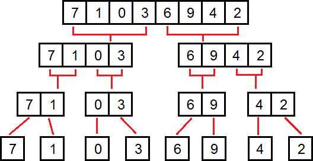

Изучение алгоритмов мы начнем с сортировок. Конечно, вы можете сортировать массивы с помощью встроенной функции sort. Однако, сортировки - лучший пример для демонстрации того, как можно уменьшать сложность алгоритма. Изучение программирования все начинают именно с них. На следующих уроках мы будем изучать алгоритмы, которые не имеют встроенных аналогов.
На этом уроке мы будем сортировать массивы по возрастанию элементов.
Самая простая сортировка - сортировка пузырьком. Алгоритм следующий: мы проходим по массиву, который хотим отсортировать. Если текущий элемент больше, чем следующий, то их нужно поменять местами (массив должен быть остортирован по возрастанию). Рассмотрим пример:
[4, 2, 5, 3, 1]
.^.............
Сейчас мы смотрим на первый элемент в массиве. Следующий (второй) элемент равен двум. Первый элемент больше второго, значит их нужно поменять местами.
[2, 4, 5, 3, 1]
....^..........
Теперь мы смотрим на второй элемент. Он меньше третьего, значит менять ничего не нужно.
[2, 4, 5, 3, 1]
.......^.......
Третий элемент больше четвертого. Меняем их местами.
[2, 4, 3, 5, 1]
..........^....
Четвертый элемент больше пятого. Опять меняем местами.
[2, 4, 3, 1, 5]
.............^
В результате выполнения этого алгоритма максимальный элемент ушел на последнее место. Большие элементы всплывают вверх, как пузырьки, отсюда и название алгоритма.
Было:[4, 2, 5, 3, 1] ---> Стало:[2, 4, 3, 1, 5]
Выполним этот алгоритм еще один раз.
Было:[2, 4, 3, 1, 5] ---> Стало:[2, 3, 1, 4, 5]
Теперь уже второй по размеру элемент ушел на свое место. Если мы выполним этот алгоритм столько же раз, сколько и элементов в массиве, то массив окажется отсортированным. Можете посмотреть визуализацию алгоритма на YouTube:
Приступим к коду. Для начала напишем код одного прохода по массиву (размер массива - n).
for (int i = 0 ; i < n - 1 ; i++)
{
if (a[i] > a[i + 1 ])
swap (a[i], a[i + 1 ]);
}
Функция swap из библиотеки algorithm меняет два элемента местами.
Мы проходимся по всем элементам (кроме последнего) и сравниваем их со следующими. Из описания сортировки мы знаем, что этот алгоритм нужно повторить n раз. Поместим код выше в другой цикл.
for (int j = 0 ; j < n; j++)
{
for (int i = 0 ; i < n - 1 ; i++)
if (a[i] > a[i + 1 ])
swap (a[i], a[i + 1 ]);
}
Алгоритм сортировки написан! Его сложность - O(n2). За секунду этот алгоритм может успеть отсортировать около десяти тысяч элементов.
Хотя сортировка пузырьком самая простая из всех сортировок, она и самая медленная. Встроенная в C++ сортировка работает за время O(n*log(n)), что позволяет сортировать несколько миллионов элементов за секунду.
Перед изучением новой сортировки нам нужно разобрать еще один вспомогательный алгоритм. Этот алгоритм сливает два отсортированных массива в один отсортированный массив.
Как это можно сделать?
Назовем два отсортированных массива - a и b.
a = [1, 3, 4, 6] b = [2, 5]
Нам нужно получить отсортированный массив c, в котором будут содержаться все элементы из a и b. Очевидно, что первый элемент в c - это первый элемент либо в массиве a, либо в массиве b (потому что они минимальные в своих массивах). Давайте представим стрелочки, показывающие на эти элементы.
.....^................^....
c = []
.....^................^....
c = [1]
........^.............^....
c = [1]
........^................^.
c = [1, 2]
...........^.............^.
c = [1, 2, 3]
...........^...............^
c = [1, 2, 3, 4]
..............^............^
c = [1, 2, 3, 4, 5]
................^..........^
c = [1, 2, 3, 4, 5, 6]
vector <int > merge(vector <int > a, vector <int > b)
{
vector <int > c;
int l = 0 , r = 0 ;
while (c.size() < a.size() + b.size())
if (l == a.size())
push_back (b[r]);
else if (r == b.size())
push_back (a[l]);
else if (a[l] < b[r])
push_back (a[l]);
else
push_back (b[r]);
return c;
}
Разберем этот код. Мы создали новый массив c, куда будем добавлять элементы из a и b. Теперь реализуем вышеописанный алгоритм. Повторяться он должен до тех пор, пока все элементы не перейдут в массив c.
while (c.size() < a.size() + b.size())
Переменные l и r - это указатели на элементы (стрелочки из нашего примера). Сначала стрелочки показывают на первый элемент в массиве. Если вдруг указатель вышел за пределы одного массива, то мы копируем значения и двигаем указатель другого массива.
if (l == a.size())
{
push_back (b[r]);
}
else if (r == b.size())
{
push_back (a[l]);
}
Если же все указатели находятся внутри массивов, то мы выбираем меньший из элементов, на который они указывают.
else if (a[l] < b[r])
{
push_back (a[l]);
}
else
{
push_back (b[r]);
}
Мы реализовали вспомогательный алгоритм. Теперь давайте реализуем сортировку слиянием.
Алгоритм следующий: разобьем массив на две половины, отсортируем их по отдельности и сольем вместе.
vector <int > merge_sort(vector <int > a)
{
vector <int > left, right;
for (int i = 0 ; i < a.size () / 2 ; i++)
push_back (a[i]);
for (int i = a.size () / 2 ; i < a.size (); i++)
push_back (a[i]);
return merge(left, right);
}
Функция merge_sort сортирует массив. Сначала мы разбиваем массив a на две половины (left и right). Потом сортируем эти половины. И сливаем их вместе. Функция сортировки вызывает саму себя. Это называется рекурсией.
Существует проблема, из-за которой код выше не будет работать. Сортировка будет бесконечно вызывать саму себя и никогда не остановится.

Если вы создаете рекурсивную функцию, то должны добавить у нее условие выхода (если это условие выполнится, то функция не вызовет сама себя). Такое условие называется база рекурсии. В нашем случае рекурсию можно завершить, если количество элементов в массиве меньше двух. Если это так, то массив уже отсортирован (массив из нуля или одного элементов отсортирован всегда).
vector <int > merge_sort(vector <int > a)
{
if (a.size () < 2 )
return a;
vector <int > left, right;
for (int i = 0 ; i < a.size () / 2 ; i++)
push_back (a[i]);
for (int i = a.size () / 2 ; i < a.size (); i++)
push_back (a[i]);
return merge(left, right);
}
Рассмотрим работу этой функции на примере.
left = [4, 2], right = [1, 3]
left = [4], right = [2]
c = [2, 4]
left = [2, 4], right = [1, 3]
left = [2, 4], right = [1, 3]

Как оценить сложность такого алгоритма? Для новичка это может оказаться трудным заданием. Поможет картинка выше. Заметим, что можно разбить все вызовы функции на уровни (полный массив - первый уровень, половина - второй уровень, четверть - третий и т.д.). Каждый уровень на этой картинке показан одной строкой. Можно заметить, что количество элементов, с которыми происходит работа, на каждом уровне одинаково и равно размеру изначального массива. Значит, все операции на одном уровне будут выполняться за время O(n), а итоговая сложность алгоритма - O(n * количество уровней).
Как можно посчитать количество уровней? Каждый из них делит размер исходного массива на два, пока размер не станет равным единице. Вспомним теорему из прошлой статьи, количество таких делений (и уровней тоже) будет равно двоичному логарифму от размера массива. Итоговая сложность - O(nlog(n)).
Попробуйте сами написать сортировки, которые мы сегодня изучили и решить с помощью них следующие задачи.